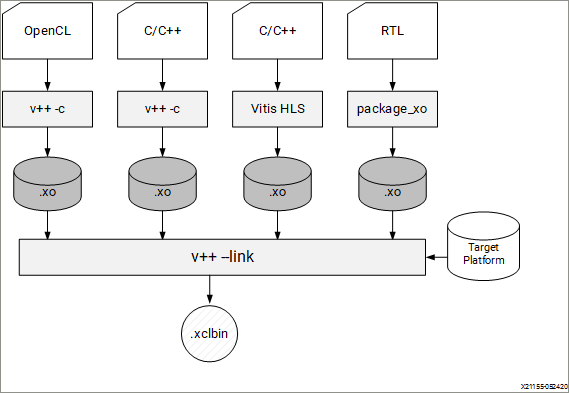

2020.1 Vitis™ Application Acceleration Development Flow TutorialsSee 2019.2 Vitis Application Acceleration Development Flow Tutorials |
Essential Concepts for Building and Running the Accelerated Application |
1. Building an Application¶
Introduction¶
As described in the Execution Model of an FPGA Accelerated Application, an accelerated application consists of a software program running on an x86 server, and the accelerated kernels running on an Alveo Data Center accelerator card or Xilinx device. The sources for both need to be built (compiled and linked) separately. For additional details, see Introduction to the Vitis Environment for Acceleration in the Application Acceleration Development flow of the Vitis Unified Software Platform Documentation (UG1416).
This tutorial describes how to build both the software and hardware portions of your design using the g++ compiler and Vitis compiler (v++). It describes various command line options, including how to specify a target platform, and building for hardware or software emulation.
Reference files are provided in the reference-files directory for use with this tutorial.
IMPORTANT: Before running the example commands, ensure you have set up the Vitis core development kit by running the following commands, as described in Setting up the Vitis Environment.
#setup Xilinx Vitis tools. XILINX_VITIS and XILINX_VIVADO will be set in this step. source <VITIS_install_path>/settings64.sh #Setup Xilinx runtime. XILINX_XRT will be set in this step. source <XRT_install_path>/setup.sh
TIP: There is a Makefile provided in the reference-files that you can use to build the system (make build) or elements of the build such as the host (make exe) and the xclbin (make xclbin). You can also use make clean to clean the build data and start again.
Building the Software¶
The software program is written in C/C++ and uses OpenCL™ API calls to communicate and control the accelerated kernels. It is built using the standard GCC compiler or using the g++ compiler, which is a wrapper around GCC. Each source file is compiled to an object file (.o) and linked with the Xilinx Runtime (XRT) shared library to create the executable. For details on GCC and associated command line options, refer to Using the GNU Compiler Collection (GCC).
Compiling the Software Program
Change directory to the
./reference_files/runfolder:cd <Vitis-Tutorials>/docs/Pathway3/reference_files/run
To compile the host application, use the
-coption with a list of the host source files.Optionally, the output object file name can be specified with the
-ooption as shown as follows.g++ ... -c <source_file_name1> ... <source_file_nameN> -o <object_file_name> -g
Linking the Software Program
To link the generated object files, use the
-loption and object input files as follows.g++ ... -l <object_file1.o> ... <object_fileN.o> -o <output_file_name>
TIP: Host compilation and linking can be integrated into one step which does not require the
-cand-loptions. Only the source input files are required as shown in the following example.g++ ... <source_file_name1> ... <source_file_nameN> ... -o <output_file_name>Required Flags
You will need to specify include paths and library paths for XRT and the Vivado tools:
Use the
-Ioption to specify the include directories:-I$XILINX_XRT/include -I$XILINX_VIVADO/includeUse the
-Loption to specify directories searched for-llibraries:-L$XILINX_XRT/libUse the
-loption to specify libraries used during linking:-lOpenCL -lpthread -lrt -lstdc++
Complete Command
The complete command to compile and link the host program in one step, from the
./reference_files/runfolder, will look like the following. Run the following command:g++ -I$XILINX_XRT/include/ -I$XILINX_VIVADO/include/ -Wall -O0 -g -std=c++11 \ ../src/host.cpp -o 'host' -L$XILINX_XRT/lib/ -lOpenCL -lpthread -lrt -lstdc++
Command Options and Descriptions
-I../libs,-I$XILINX_XRT/include/, and-I$XILINX_VIVADO/include/: Include directory-Wall: Enable all warnings-O0: Optimization option (execute the least optimization)-g: Generate debug info-std=c++11: Language Standard (define the C++ standard, instead of the include directory)../src/host.cpp: Source files-o 'host': Output name-L$XILINX_XRT/lib/: Look in XRT library-lOpenCL,-lpthread,-lrt, and-lstdc++: Search the named library during linking
Building the Hardware¶
Next, you need to build the kernels that run on the hardware accelerator card. Similar to building the host application, building kernels also requires compiling and linking. The hardware kernels can be coded in C/C++, OpenCL C, or RTL. The C/C++ and OpenCL C kernels are compiled using the Vitis compiler, while RTL-coded kernels are compiled using the Xilinx package_xo utility.
For details on both v++ and package_xo, refer to the Vitis Environment Reference Materials in the Application Acceleration Development flow of the Vitis Unified Software Platform Documentation (UG1416). Regardless of how each kernel is compiled, both methods generate a Xilinx object file (.xo) as an output.
The object files are subsequently linked with the shell (hardware platform) through the Vitis compiler to create the FPGA binary file, or xclbin file.
The following figure shows the compiling and linking flow for the various types of kernels.

This tutorial is limited to v++ compilation and does not consider RTL kernels. For details on building RTL kernels, see the Getting Started with RTL Kernels tutorial.
Hardware Compilation¶
In hardware compilation, you are compiling hardware kernel source files through the v++ command -c option. While v++ command has command options, at minimum, you must specify the source files, the targeted platform, and the build target. For a complete list of v++ command options, refer to the Vitis Compiler Command in the Application Acceleration Development flow of the Vitis Unified Software Platform Documentation (UG1416).
The -k or --kernel argument is used to specify the kernel name within the kernel source file to compile as follows.
v++ … -k <kernel_name> <kernel_source_file> … <kernel_source_file>
The targeted platform must be specified during both compile and linking stages and is specified through the --platform option as follows.
v++ … --platform <platform_target>
Finally, the build target is specified with the -t option.
v++ … -t <build_target>
There are three different build targets; two emulation targets used for debug and validation purposes, and one hardware target used to generate the actual binary needed to run on the FPGA.
These build target configurations options are: sw_emu, hw_emu and hw.
In Software Emulation (
sw_emu), both the host application code and the kernel code are compiled to run on the x86 processor. This allows iterative algorithm refinement through fast build-and-run loops. This target is useful for identifying syntax errors, performing source-level debugging of the kernel code running together with application, and verifying the behavior of the system. For RTL kernels, software emulation can be supported if a C model is associated with the kernel. When a C model is not available, then hardware emulation must be used to debug the kernel code.For Hardware Emulation (
hw_emu) kernel code is compiled into a hardware model, which is run in a hardware simulator, while the rest of the system uses a C simulator. Building and running takes longer but provides a detailed, cycle-accurate view of kernel activity. This target is useful for testing the functionality of the logic that will run in the FPGA and for getting initial performance estimates.Finally, when the target is set to Hardware (
hw), the kernel code is synthesized and compiled to generate a binary to run on the FPGA.
The Vitis compiler supports configuration files on the command line. This helps manage long command lines with individual switches, and helps to logically group related switches. In this lab, you will use a design.cfg file and put all needed options in that file. Open the design.cfg file and look at the content.
platform=xilinx_u200_xdma_201830_2
debug=1
save-temps=1
[connectivity]
nk=mmult:1:mmult_1
Use the following command to compile the kernel into a software emulation target, from the /reference-files/run folder:
v++ -t sw_emu --config design.cfg -c -k mmult -I'../src' -o mmult.sw_emu.xilinx_u200_xdma_201830_2.xo ../src/mmult.cpp
Command and Config File Options and Descriptions
-t sw_emu: Target software emulation
--config design.cfg: Specify a config file to use
platform=xilinx_u200_xdma_201830_2: Target the xilinx_u250 platform
debug=1: Generate debug info
save-temps=1: Save temporary files generated during the build process
nk=mmult:1:mmult_1: Define the number of kernel instances (CUs) to instantiate
-c: Compile the kernel
-k mmult: Specify a kernel to compile
../src/mmult.cpp: Specify source files
-o mmult.sw_emu.xilinx_u200_xdma_201830_2.xo: Specify the .xo output path and file name
The v++ command also generates the compile_summary file that can be viewed with Vitis analyzer to review relevant reports. You can open Vitis analyzer and review the compile summary using the following command:
vitis_analyzer mmult.sw_emu.xilinx_u200_xdma_201830_2.xo.compile_summary
Hardware Linking¶
During hardware linking, you will link one or more kernels with the platform to create an output binary container (.xclbin) file. The v++ command -l option is used to link the hardware kernels. Similar to compiling, linking requires several options including specifying the .xo object files as input, the target platform, and the build target. For the available linking options, refer to Vitis Compiler Command in the Application Acceleration Development flow of the Vitis Unified Software Platform Documentation (UG1416). The platform and build target options used during linking must match those used during compilation.
The .xo object files are specified on the v++ command by directly listing the object files. Multiple object files can be added.
v++ … <kernel_1.xo> … <kernel_2.xo>
There are many options that can be specified during linking stage. For instance, --nk is one of them. It is used to specify the number of kernel instances, or compute units (CUs) to create during the linking process. The usage is shown below.
v++ ... --nk <kernel_name>:<compute_units>:<kernel_name1>:…:<kernel_nameN>
TIP: The instance name (`kernel_name1…’) is optional, and automatically defined if not specified.
You can also specify the name of the generated output file using the -o option. The output file in the link stage will be a xclbin file, and should be named accordingly.
v++ ... -o <xclbin_name>.xclbin
Now, link the hardware. Notice that you must specify the platform and target as previously to match the target in the hardware compile step. Run the following command.
v++ -t sw_emu --config design.cfg -l -g -o mmult.sw_emu.xilinx_u200_xdma_201830_2.xclbin mmult.sw_emu.xilinx_u200_xdma_201830_2.xo
Command Options and Descriptions
-l: Link the kernel
-g: Generate debug info
-t sw_emu: Target software emulation
--config design.cfg: Specify configuration files being used in compilation
nk=mmult:1:mmult_1: Create one CU called mmult_1. This is now defined in the configuration file.
mmult.sw_emu.xilinx_u200_xdma_201830_2.xo: Input object file
-o mmult.sw_emu.xilinx_u200_xdma_201830_2.xclbin: Specify the name of the output xclbin file
The v++ commands also generate the link_summary file that can be used with the Vitis analyzer to visualize relevant reports. Use the following command to view the link_summary.
vitis_analyzer mmult.sw_emu.xilinx_u200_xdma_201830_2.xclbin.link_summary
Building for Hardware Emulation¶
To build the hardware for hardware emulation, or for targeting the Alveo Data Center accelerator card hardware, change the -t option specifying the <build_target> from sw_emu to hw_emu for hardware emulation, or hw to build for the accelerator card.
The following code example shows the compile and link v++ commands for the hardware emulation build target.
v++ -t hw_emu --config design.cfg -c -k mmult -I'../src' -o mmult.hw_emu.xilinx_u200_xdma_201830_2.xo ../src/mmult.cpp
v++ -t hw_emu --config design.cfg -l -o mmult.hw_emu.xilinx_u200_xdma_201830_2.xclbin mmult.hw_emu.xilinx_u200_xdma_201830_2.xo
Reviewing Hardware Emulation Build Reports in the Vitis Analyzer¶
During the compile, link, and run stages, the Vitis tool generates a summary for each step of the build process, and a series of reports related to that build step. This summary offers a brief overview of the status of the build, and the command-line used to create it. These summary reports can be viewed inside the Vitis analyzer tool, and when these summary reports are opened, the Vitis analyzer automatically opens the relevant reports associated with that summary. Some of these reports include:
The guidance generated by the Vitis tool can have several severity levels: errors, advisories, warnings, and critical warnings. These are produced during the compilation, link, and run steps of software emulation, hardware emulation, and hardware builds.
For hardware emulation and hardware builds, performance estimates are provided for the kernel (
.xo), and system (xclbin). The estimate reports are automatically generated for both the compilation and linking stages. It provides the estimated FPGA resource usage and estimated frequency of the hardware accelerated kernels.The HLS Synthesis report provides synthesis results from the Vitis HLS tool, with sub-functions and loops described. Latency is reported in terms of clock cycles and time.
For more information on the various reports, refer to Profiling the Application in the Application Acceleration Development flow of the Vitis Unified Software Platform Documentation (UG1416).
Use the following command to open the hardware emulation (hw_emu) link summary:
vitis_analyzer hw_emu/mmult.hw_emu.xilinx_u200_xdma_201830_2.xclbin.link_summary
The following figure shows an example of the Summary report generated during the hw_emu link stage. On the left side of the Vitis analyzer tool, under the link_summary, you can see the list of opened reports. This includes the compile_summary, which is opened for each kernel included in the link command. You can select any report listed to open it in Vitis analyzer. For more information, refer to Using the Vitis Analyzer in the Application Acceleration Development flow of the Vitis Unified Software Platform Documentation (UG1416).

The Vitis analyzer uses files generated during the build process to provide its report views. Therefore, you need to add the --save-temps option to the command line, or config file as you have done in this tutorial. However, the saved reports will be overwritten when rerunning the build process, or building a new target. Therefore, the software emulation build reports get overwritten with hardware emulation build reports. You can prevent this by redirecting your output to a new --temp_dir from the command line, or you can use the archive_summary command to create a report archive of the current build before running a new build.
After running the software emulation build or the hardware emulation build, use the following command to create an archive.
archive_summary mmult.hw_emu.xilinx_u200_xdma_201830_2.xclbin.link_summary mmult.hw_emu.link_summary.archive
Use archive_summary -h to learn more about this command, and its options. Create the archive before running subsequent builds to ensure your summary reports are preserved to compare with future runs. Archiving the link_summary automatically preserves the compile_summary report that the link_summary references.
Building for Hardware¶
The compile and link v++ commands for the hardware build target are provided in the following code example.
IMPORTANT: Because of the FPGA binary file synthesis and implementation, compiling and linking for the hardware target can take several hours.
v++ -t hw --config design.cfg -c -k mmult -I'../src' -o mmult.hw.xilinx_u200_xdma_201830_2.xo ../src/mmult.cpp
v++ -t hw --config design.cfg -l -o mmult.hw.xilinx_u200_xdma_201830_2.xclbin mmult.hw.xilinx_u200_xdma_201830_2.xo
Putting it All Together¶
The following steps summarize how to build both the software and hardware targeting different builds using the source files in this lab.
Set up the Vitis core development kit.
#setup Xilinx Vitis tools, XILINX_VITIS and XILINX_VIVADO will be set in this step. source <VITIS install path>/settings64.sh. for example: source <Vitis_install_dir>/Vitis/2020.1/settings64.sh #Setup runtime. XILINX_XRT will be set in this step source /opt/xilinx/xrt/setup.sh #change to the working directory cd ./reference-files/run
Build the host software.
g++ -I$XILINX_XRT/include/ -I$XILINX_VIVADO/include/ -Wall -O0 -g -std=c++11 ../src/host.cpp -o 'host' -L$XILINX_XRT/lib/ -lOpenCL -lpthread -lrt -lstdc++
Build the hardware. Select the target (software emulation, hardware emulation, or hardware), and run the associated commands.
Target for software emulation
v++ -t sw_emu --config design.cfg -c -k mmult -I'../src' --temp_dir sw_emu -o 'sw_emu/mmult.sw_emu.xilinx_u200_xdma_201830_2.xo' '../src/mmult.cpp' v++ -t sw_emu --config design.cfg -l --temp_dir sw_emu -o 'sw_emu/mmult.sw_emu.xilinx_u200_xdma_201830_2.xclbin' sw_emu/mmult.sw_emu.xilinx_u200_xdma_201830_2.xo
Target for hardware emulation
v++ -t hw_emu --config design.cfg -c -k mmult -I'../src' --temp_dir hw_emu -o 'hw_emu/mmult.hw_emu.xilinx_u200_xdma_201830_2.xo' '../src/mmult.cpp' v++ -t hw_emu --config design.cfg -l --temp_dir hw_emu -o 'hw_emu/mmult.hw_emu.xilinx_u200_xdma_201830_2.xclbin' hw_emu/mmult.hw_emu.xilinx_u200_xdma_201830_2.xo
Target for system
IMPORTANT: This step is optional as it can take several hours.
v++ -t hw --config design.cfg -c -k mmult -I'../src' --temp_dir hw -o 'hw/mmult.hw.xilinx_u200_xdma_201830_2.xo' '../src/mmult.cpp' v++ -t hw --config design.cfg -l --temp_dir hw -o 'hw/mmult.hw.xilinx_u200_xdma_201830_2.xclbin' hw/mmult.hw.xilinx_u200_xdma_201830_2.xo
Archive the link_summary and compile_summary for the build.
archive_summary mmult.hw_emu.xilinx_u200_xdma_201830_2.xclbin.link_summary mmult.hw_emu.link_summary.archive
Next Steps¶
After successfully building a design, you will want to run emulation to debug and optimize the design.
The Running Software and Hardware Emulation lab details how to run software and hardware emulation.
If you have an Alveo Data Center accelerator card, you can also run the application directly on hardware by following the details in the Executing in Hardware lab.
Return to Getting Started Pathway — Return to Start of Tutorial
Copyright© 2020 Xilinx